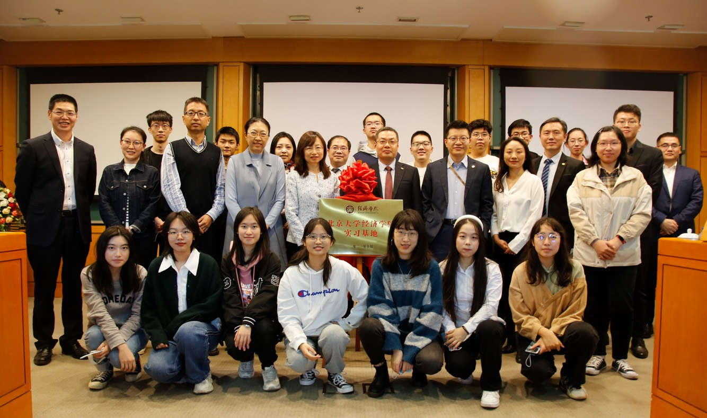
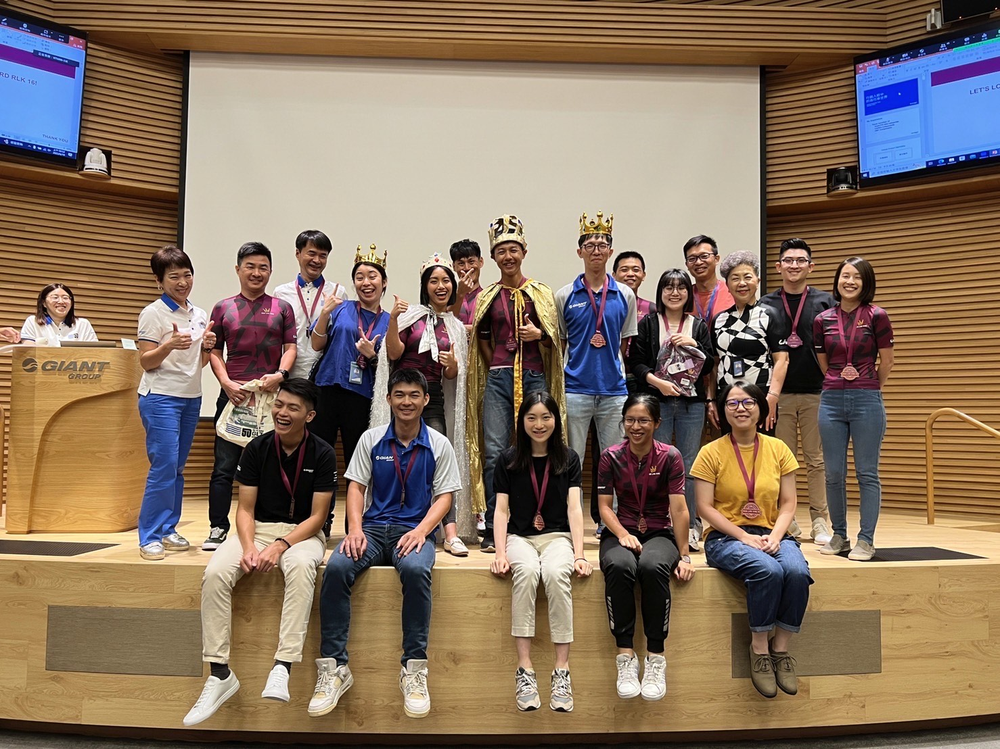
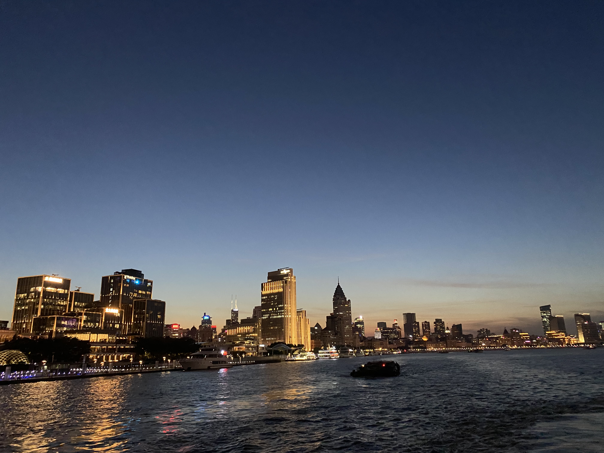

Part of my life
Journey of Joy and Connection
Life is a tapestry woven with countless moments of joy and connection. It is within these moments that we truly find meaning and fulfillment. I want to share with you a glimpse into my own journey—a journey filled with remarkable experiences and cherished connections.
Image
💫🌱🧗🏼♀️

Left & Right
 The comrades I met in the cycling club taught me the spirit of supporting each other as a team. Whenever I felt like giving up while tackling uphill challenges, there would always be voices of encouragement echoing in my ears, or silent companions riding alongside me at a steady pace. Watching others persevere ahead gave me the determination to push through. I often wondered, what kind of power drives the selfless dedication of everyone in the cycling club? Each memory and every smile shared with my teammates gave me the strength to keep going. There are so many people to express gratitude towards that it's hard to count, so I will cherish these memories in my heart. Being able to meet all of you and become friends during my time at Peking University is truly a stroke of luck.
The comrades I met in the cycling club taught me the spirit of supporting each other as a team. Whenever I felt like giving up while tackling uphill challenges, there would always be voices of encouragement echoing in my ears, or silent companions riding alongside me at a steady pace. Watching others persevere ahead gave me the determination to push through. I often wondered, what kind of power drives the selfless dedication of everyone in the cycling club? Each memory and every smile shared with my teammates gave me the strength to keep going. There are so many people to express gratitude towards that it's hard to count, so I will cherish these memories in my heart. Being able to meet all of you and become friends during my time at Peking University is truly a stroke of luck.
I consider myself extremely fortunate to have joined Giant Group. Combining my interests and expertise, I analyze various data related to bicycle production lines, gaining valuable knowledge about the manufacturing processes. This photo captures a moment from an internal bicycle race organized by the company, where I achieved second place! But what brings me even greater joy is that through this event and my time working here, my love for cycling has grown exponentially! The landscapes encountered during my journeys and the connection with the environment have deepened my appreciation for cherishing our planet.
🔙 🔜
As I look back on the chapters of my life, I am grateful for the countless instances of joy that have colored my days. From the simple pleasures of a morning sunrise to the exhilaration of achieving personal milestones, each moment has contributed to the vibrant tapestry of my existence. But what truly makes life meaningful are the connections we forge along the way. The relationships we nurture, the bonds we form—they are the threads that weave our stories together. It is through these connections that we find solace, support, and a sense of belonging.
- © Untitled
- Design: HTML5 UP